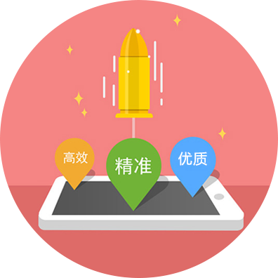

一键委托开发
为解决企业或个人在有技术外包需求时，找到更专业的团队协助企业（个人）进行项目进度、质量管控，外包购推出了一键委托开发功能。企业只需要提供商业诉求，剩下的由外包购来帮您完成。一键委托服务包括：需求梳理、项目询价、项目进度把控、代码管理、项目移交、后期维护，持续为企业（个人）提供CTO式技术支持服务。
一键委托流程
01.需求提交
02.客服介入
03.项目开发
04.流程监控
05.项目交付
提交开发需求
Submit development requirements技术范围及项目评估、合作模式确定、协议合同的签订
Technical scope and project evaluation, cooperation mode determination, contract signing成立工作组、制定研发周期表、原型及设计确认、全程委托开发
The establishment of the working group, the development of the periodic table, prototype and design confirmation, full commissioned development按周期表工作、实时监控项目进度、质量流程监控
Work according to the periodic table, real-time monitoring project schedule, quality process control项目交接测试、技术交接及培训、项目维护、售后咨询
Project handover test, technology transfer and training, project maintenance, after sales consulting
